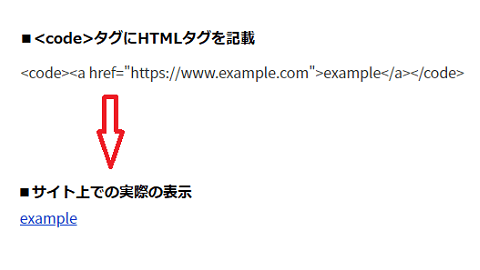

<pre><code>でプログラムのコードを表示
サイト上でHTMタグなどを表示する際、<code></code>タグで囲むことで、検索エンジンにそれがプログラムのコードであることを明示することができます。
ただし、この<code>内のHTMLタグもブラウザは解釈してしまうため、そのまま記載してもソースコードを表示させることはできません。そのため、HTMLタグの「<」や「>」などの特殊文字を実体参照に変換したのち、コードとしては機能しない状態にして記入する必要があります。
また、ソースコード内で整形した改行などを反映させる<pre></pre>タグと合わせて使用することで、<code>タグ内に<br>などを記載しないでコードのみを記載することができます。
この<code>と<pre>でそれぞれ役割は違いますが、HTMLタグなどのプログラミングのコードをサイト上で表示させる際には、この二つを併用して<pre><code></code></pre>タグを使用するのが一般的です。
<pre><code>プログラムのコード</code></pre>また、この<pre>タグはブロックレベル要素となっており、CSSに折り返しのword-wrap: break-word;や背景色なども指定するとコードと分かる形に仕上げることができます。
例えば、CSSで以下のように指定したとします。
pre {
word-wrap: break-word;
background-color: #f4f4f4;
padding: 10px;
border-radius: 4px;
font-size: 16px;
}すると、上記のようにコード部分が灰色の背景色で表示されます。この<pre>タグは上記のように改行が反映されるため、<br>も記載すると2回改行されてしまうので注意しましょう。
<pre><code>でHTMLタグをそのまま表示させるには？
上記のように、<code>タグ内にHTMLタグを記載しても、そのタグの機能が無効になるわけではありません。
例えば、リンクのHTMLタグを<code>内に記載しても、実際にはソースコードではなく、このリンクタグが機能した状態で表示されます。

そのため、HTMLタグをサイト上でそのまま表示させるには、山括弧<>などの特殊記号を実体参照に変換してから記入する必要があります。
例えば、上記のリンクのHTMLタグをそのまま表示させる場合、「<」を「<」、「>」を「>」、「"」を「"」に変換したのち、HTMLソース上に以下のように記入します。
■HTMLソースの内容
<code><a href="https://www.example.com">example</a></code>すると、この場合はHTMLタグが機能せず、このようにソースコードがそのままの状態で表示されます。
■実際のサイト上での表示
<a href="https://www.example.com">example</a>そのため、HTMLタグをそのまま表示するには<code>タグは関係がなく、単に特殊記号を変換すれば表示されます。
当サイト内ではHTMLタグをそのまま表示している箇所が無数にありますが、この<code>タグを使っている箇所は少ないです。
どちらかといいますと、HTMLタグを<textarea></textarea>で囲めば、実体参照に変換する必要はありませんし、改行も反映されるため、当サイト内では<textarea>タグを使用している箇所が多いです。
けれども、この<textarea>タグは、主にお問合せフォームの入力欄などでユーザーが文字を入力して送信するために使用するものです。文字を編集することも可能ですし、プログラムのコードを表示するような使い方には向いていません。
その点、この<code>タグは、検索エンジンに対してエラーでHTMLソースが表示されてしまったのではなく、サイト運営者が意図してソースコードを表示させていることを伝えるメリットがあります。
プログラムのコードは<pre></pre>も併用するのが一般的
１行のみの場合、上記の<code>タグのみでも特に問題ないと思いますが、改行する必要がある場合は<pre>タグも併用すると便利です。
例えば、以下のようなDTDのHTMLタグをサイト上で表示したいとします。
<!DOCTYPE html>
<html lang="ja">
<head>
<meta charset="UTF-8">このように表示する場合、<code>タグ内では改行が反映されないため、改行をする箇所では<br>タグも記入する必要が出てきます。
■HTMLソースの内容
<code><!DOCTYPE html><br>
<html lang="ja"><br>
<head><br>
<meta charset="UTF-8"></code>もし、この<br>を記入しなかった場合、以下のように改行されずに表示されてしまいます。
■実際のサイト上での表示
<!DOCTYPE html>
<html lang="ja">
<head>
<meta charset="UTF-8">
このような場合、改行などの整形も反映される<pre>タグを併用すると便利です。<pre>タグ内では改行が反映されるため、コードを<br>なしでそのまま記入することができます。
■HTMLソースの内容
<pre><code><!DOCTYPE html>
<html lang="ja">
<head>
<meta charset="UTF-8"></code></pre>この<pre>はブロックレベル要素ですが、上記の例のように、この<pre>にはCSSも指定してコード部分と分かるように背景色なども指定しておくとよいでしょう。